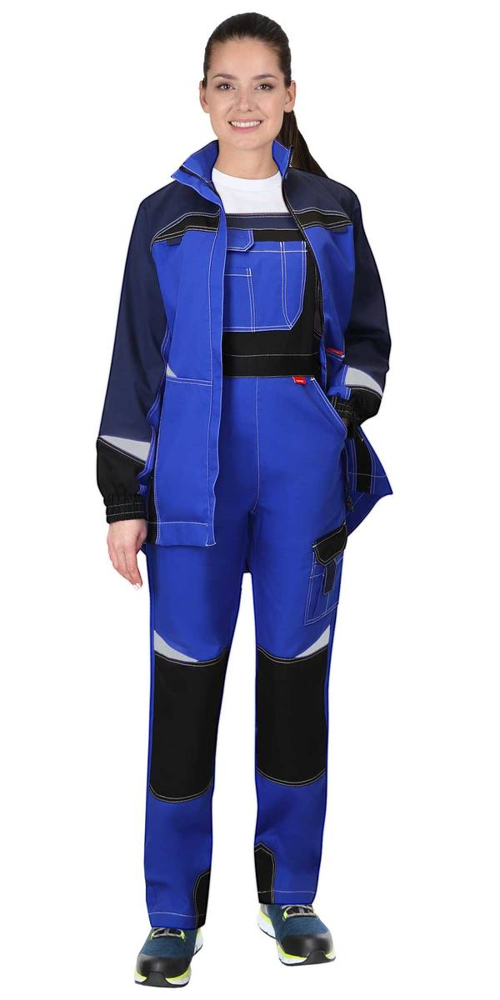
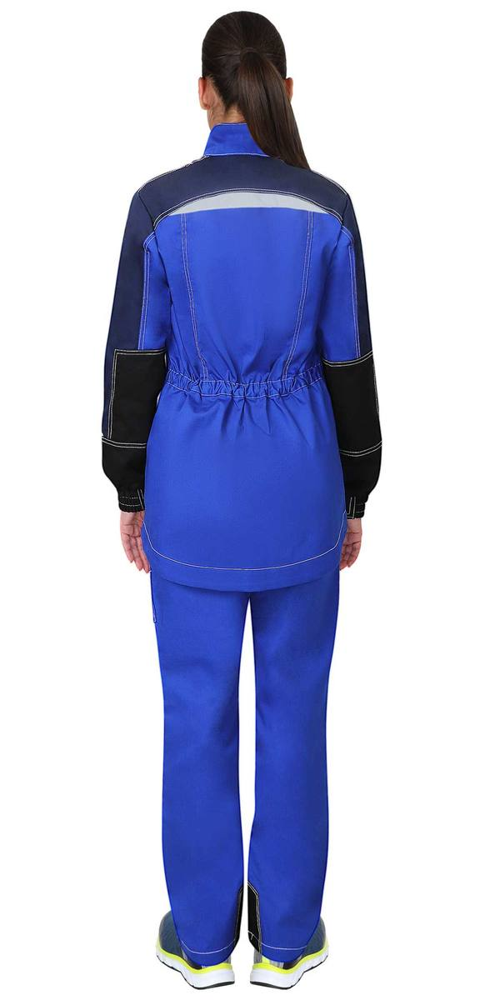
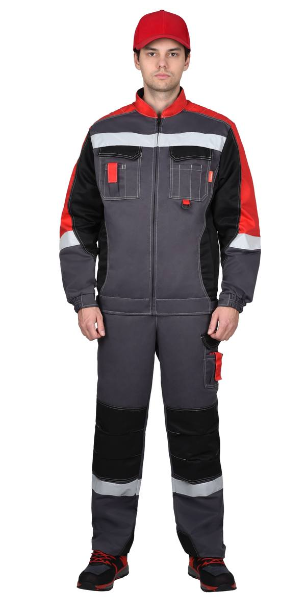
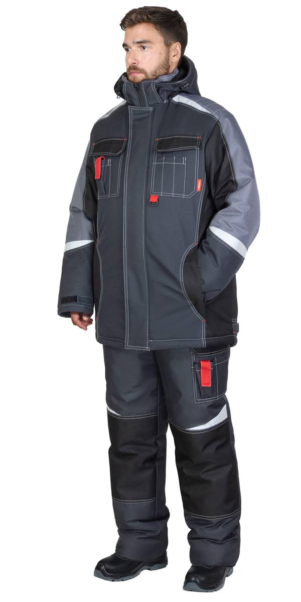
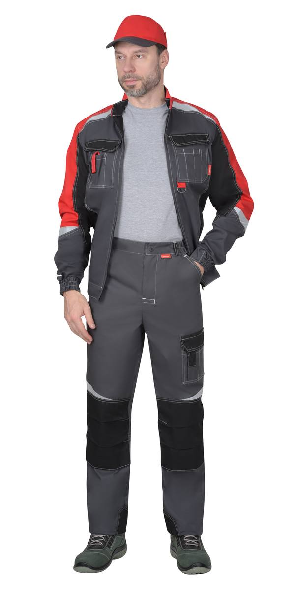
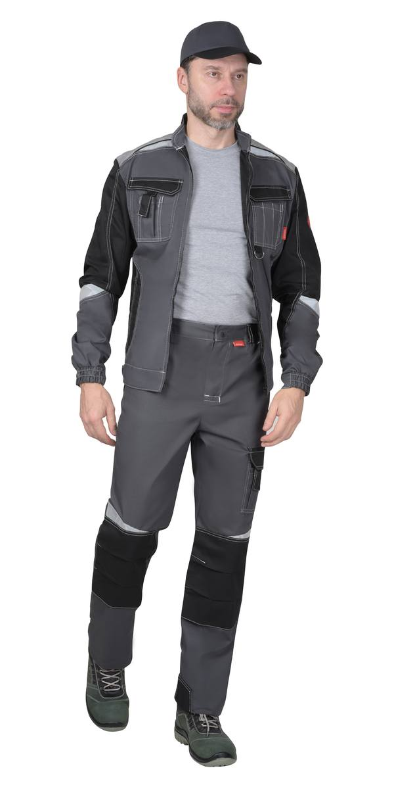
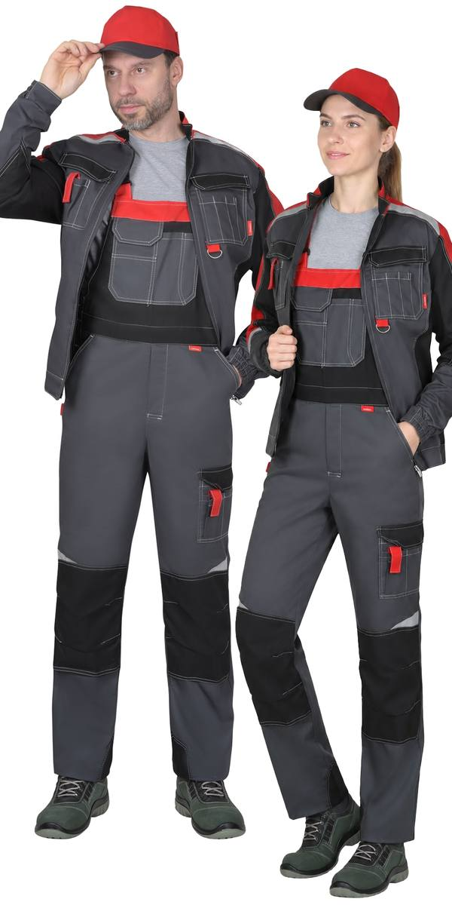
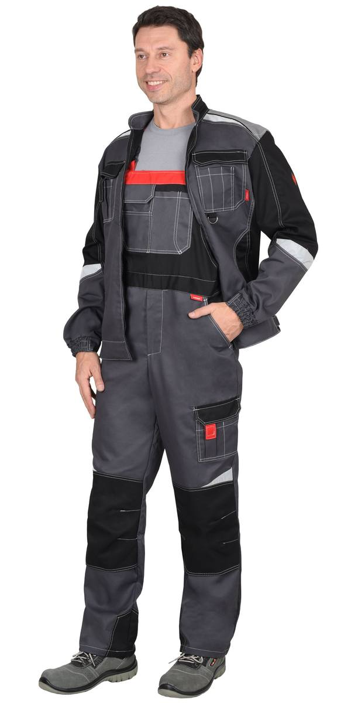
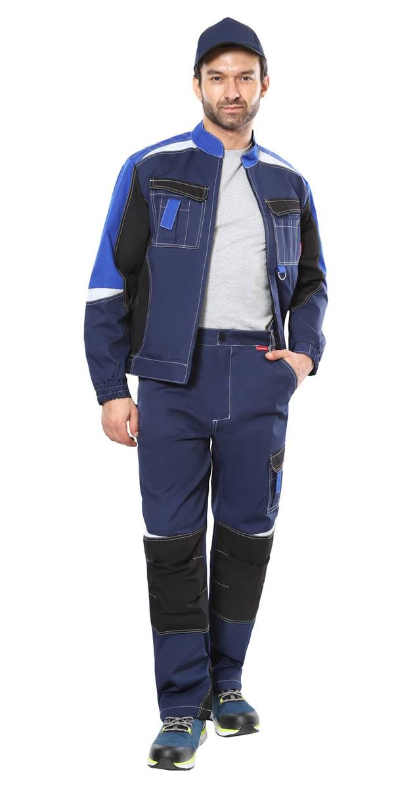
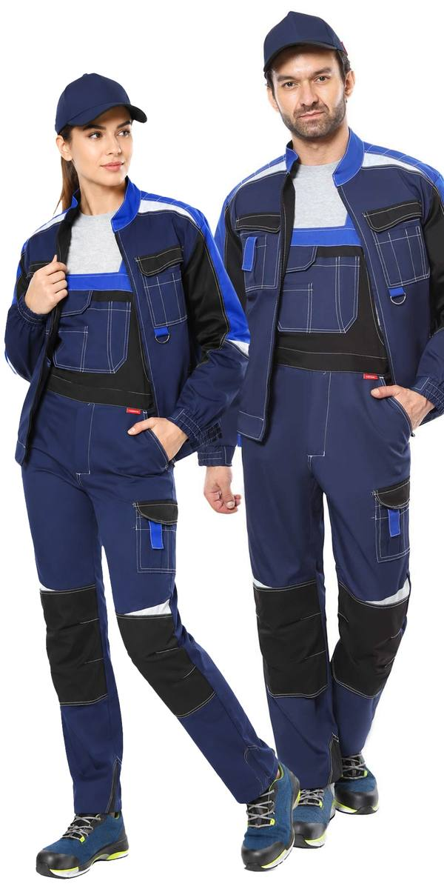

Костюм летний кур. кор., п/к т-серый с красн. и черн. СОП 50мм тк.Твилл 240 (ЧЗ)
Костюм -М зимний куртка дл, п/к т-сер с чер и ср.серой отд Тк.Орион-мембрана (ЧЗ)
Костюм лет., куртка кор, бр сер. с красн., черн., СОП тк.Rodos
Костюм лет., куртка кор, бр, сер. с черн.,СОП тк.Rodos
Костюм лет., куртка кор, п/к, сер. с красн.,черн.,СОП тк.Rodos
Костюм лет., куртка кор, п/к, сер. с черн., СОП тк.Rodos
Костюм : куртка, брюки т.синий с черным и васильковым, СОП. тк. Rodos (ЧЗ)
Костюм : куртка, п/к т.синий с черным и васильковым, СОП. тк. Rodos (ЧЗ)| Артикул | Вариант / цвет |
|---|---|
| 145444 | Костюм жен. летний: куртка, п/к васильковый с т.синим Тк. Родос (ЧЗ) |
| 163305 | Костюм летний кур. кор., п/к т-серый с красн. и черн. СОП 50мм тк.Твилл 240 (ЧЗ) |
| 154044 | Костюм -М зимний куртка дл, п/к т-сер с чер и ср.серой отд Тк.Орион-мембрана (ЧЗ) |
| 3679 | Костюм : куртка, п/к. сер. с красн. и чер. с СОП (узб.Саржа) пл. 320 г/кв.м (ЧЗ) |
| 112538 | Костюм лет., куртка кор, бр сер. с красн., черн., СОП тк.Rodos |
| 112534 | Костюм лет., куртка кор, бр, сер. с черн.,СОП тк.Rodos |
| 108121 | Костюм лет., куртка кор, п/к, сер. с красн.,черн.,СОП тк.Rodos |
| 112531 | Костюм лет., куртка кор, п/к, сер. с черн., СОП тк.Rodos |
| 2494 | Костюм : зимний куртка дл, п/комб. т-серый с черным и красн. и СОП тк. Орион (ЧЗ) |
| 147227 | Костюм : куртка, брюки т.синий с черным и васильковым, СОП. тк. Rodos (ЧЗ) |
| 147228 | Костюм : куртка, п/к т.синий с черным и васильковым, СОП. тк. Rodos (ЧЗ) |
| 113173 | Костюм кур, п/к.серый с вас и чер.с СОП (узб,саржа) пл.320г/кв.м(распродажа) (ЧЗ) |